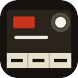

osobný slovník z vlastných textov
- 01
čo to robí
Píšete slová, ktoré nie sú v žiadnom slovníku: priezviská, ulice, názvy firiem a projektov, žargón. Agent prejde texty, ktoré ste už napísali (poznámky, odoslané e-maily, vaše správy z chatu), nájde slová, ktoré Droneboard ešte nepozná, zoznam prečistí a zapíše do súboru. Ten potom v klávesnici naimportujete. Nástroj iba číta a zapisuje súbory vo vašom počítači.
- 02
čo agent potrebuje
Python 3.8 alebo novší, nástroj
personal_dict.py(jeden súbor, stačí štandardná knižnica), APK Droneboardu z najnovšieho vydania a vaše texty. Nástroj si z APK prečíta vstavané slovníky, takže slová, ktoré klávesnica už pozná, sa nepridajú znova. - 03
návod
V súbore
personal-dictionary.md(v angličtine) je, kde hľadať texty, ako z exportu chatu vybrať len vaše správy, ktoré tri príkazy spustiť, ako zoznam prečistiť, ako vyzerá súbor na import a ako ho dostať do telefónu. Je to zároveň skill: skopírujte ho do priečinka so skillmi svojho agenta. - 04
povedzte agentovi
Prečítaj si https://cypherpunk.today/droneboard/agents/personal-dictionary.md a vyrob mi osobný slovník pre klávesnicu Droneboard z mojich vlastných textov. Texty mám v <priečinok alebo súbor>. Píšem v jazykoch <jazyky>. Všetko nechaj na tomto počítači a pred importom mi ukáž zoznam.
- 05
potom v telefóne
V Droneboarde 0.2.1 alebo novšom otvorte Nastavenia → Oprava textu → Osobný slovník → Importovať zo súboru. Ukáže, koľko slov je nových, a po potvrdení ich pridá. Slová, ktoré v slovníku už sú, ostanú. Tá istá obrazovka vie naimportovať aj slovník exportovaný z Gboardu, ak chcete len preniesť slová, ktoré ste si tam pridali ručne.
naučte droneboard nový jazyk
- 06
z čoho sa jazyk skladá
Hlavný slovník na písanie ťukaním, zoznam slov pre swipe so štatistikou dvojíc a trojíc slov, slovník emoji, malý neurónový model na predikciu ďalšieho slova, ktorý beží v telefóne, a rozloženie klávesnice. Každá časť sa stavia z otvorených dát skriptmi z repozitára.
- 07
čo agent potrebuje
Stiahnutý najnovší main, Python a miesto na disku pre korpus. Neurónový model sa trénuje cez MLX, takže treba Mac s Apple Silicon. V návode je, čo ktorý krok sťahuje a ako dlho trvá.
- 08
návod
Súbor
new-language.md(v angličtine) popisuje, ako overiť, že sa jazyk dá spraviť, odkiaľ sme brali dáta a ako nájsť to isté pre iný jazyk, príkazy na slovníky a n-gramy, trénovanie, export a overenie modelu a všetky súbory v aplikácii, ktoré treba zmeniť. Ako príklad slúžia commity, ktorými pribudla maďarčina. Na konci je, ako výsledok zmerať a čo dať do pull requestu. - 09
povedzte agentovi
Prečítaj si https://cypherpunk.today/droneboard/agents/new-language.md, stiahni si najnovší https://github.com/jooray/droneboard a pridaj do Droneboardu <jazyk>: slovníky, zoznam slov pre swipe a neurónový model na predikciu ďalšieho slova. Skôr než začneš, povedz mi, aké dáta chceš stiahnuť a ako dlho potrvá trénovanie.
- 10
pošlite to späť
Jazyk, ktorý funguje vám, bude fungovať aj ďalšiemu človeku. Otvorte pull request na github.com/jooray/droneboard s hotovými súbormi, príkazmi, ktoré ste spustili, a číslami, ktoré ste namerali.
fakty, ktoré má agent vedieť
- 11
projekt
Droneboard je open-source klávesnica pre Android (GPL-3.0), fork HeliBoardu. Identifikátor aplikácie je
today.cypherpunk.droneboard. Nemá povolenie INTERNET, takže všetko, čo používa, je v APK alebo si to používateľ naimportuje zo súboru. - 12
kde čo je
Zdrojový kód: github.com/jooray/droneboard. APK je vo vydaniach na GitHube. Nástroje na slovníky sú v
tools/dicts, na neurónový model vtools/lm, prehrávanie a meranie swipe vtools/swipe-replay. Formáty súborov popisujúnative/droneswipe/FORMAT.mdadocs/dictionaries.md. - 13
čistý text pre stroje
Oba návody sú súbory v Markdowne so stálou adresou a ich zoznam je v
llms.txt. Sú to kópie súborov z repozitára a generujú sa spolu s webom. - 14
obmedzenia
Osobný slovník sa nedá naplniť cez adb. Android doň dovolí zapisovať len klávesnici, preto sa importuje v aplikácii. Swipe funguje na jednotlivé slová v latinke. Váhy swipe enkodéra sú od FUTO a majú vlastnú licenciu.
ak sa vám páči Droneboard, môže sa vám páčiť aj…

Third Ear
Diktafón s vlastnými tlačidlami: uložte, prepíšte, skopírujte, zdieľajte alebo pošlite do skupiny vo White Noise. Nahráva aj z Bluetooth slúchadiel a načúvacích prístrojov, prepisuje v telefóne cez Offline Speech to Text a funguje v Android Auto.

I Hear You
Open-source aplikácia pre Android na ovládanie načúvacích prístrojov GN (ReSound Nexia a CROS), bez účtu a offline. Cez mikrofóny prístrojov nahráte hlasové správy a prepíšete ich v telefóne.
Všetky tri aplikácie prepisujú reč v telefóne cez Offline Speech to Text. Ako funguje diktovanie.